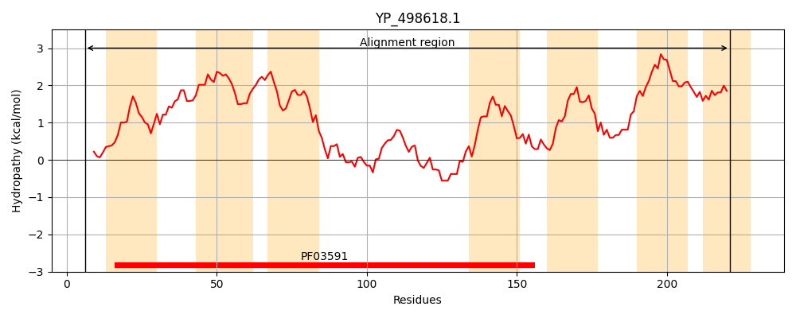
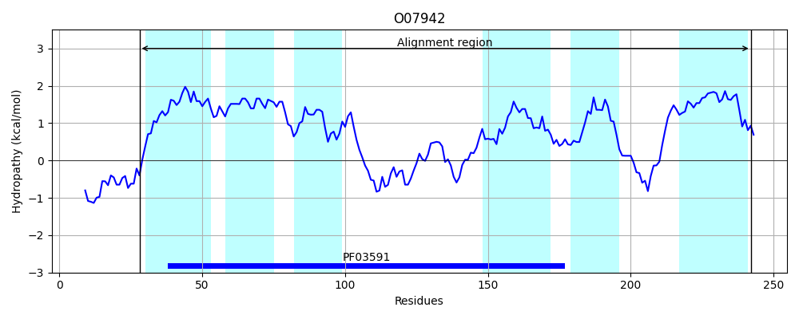
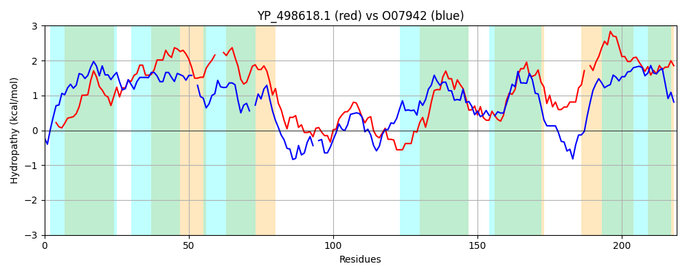

Hit Accession: O07942
Hit TCID: 2.A.78.1.1
Hit Description: gnl|BL_ORD_ID|6818 gnl|TC-DB|O07942|2.A.78.1.1 Branched-chain amino acid transport protein azlC - Bacillus subtilis.
Mach Len: 219
e:0.000000
Query TMS Count : 7
Hit TMS Count: 6
TMS-Overlap Score: 4.800000
Predicted Substrates:CHEBI:22918;branched-chain amino acid
BLAST Alignment:
Score: 208 , Bit scores: 84 bits, E-value: 7.4e-20, Alignment length: 219, Percentage identity: 27
Query: 6 SFRQGVQECIPTLLGYAGVGISFGIVASSQNFSILEIVLLCLVIYAGAAQFIMCALFIAG--TPISAIVLTVFIVNSRMFLLSMSLAPNFKTYGFWNRVGLGSLVTDETFGVAITPYLKGEAINDRWMHGLNITAYLFWAISCVAGALFGEYISNPQTLGLDFAITAMFIFLAIAQFESITKSRLRIY-IVLIIAVIVMMLSLSMFMPSYLAILIAATI 221
+FR IP G+ +GI++GI S FS + +++ +I+AG+ +F+ A F+ G P++A+ LT+ +VN+R +S+ ++ G ++ L + DE+F + T + +M + + +L+W G +FG Y+ T GLDF +TA+FI + I Q+ K + + L +A +++ +P+ LAIL T+
Sbjct: 28 AFRSAFPYTIPIFAGFLFLGIAYGIFMHSLGFSAIYPIIMSFMIFAGSMEFV-AANFLLGAFNPMNALFLTL-MVNARHLFYGISMLDKYRGTG-KKKLYLIFGMCDESFSINYTANVPANVDKGWFMFFVTLLNHLYWVAGAAIGGIFGSYVKF-NTEGLDFVMTALFIVIFIEQWMKEKKHYSALTGLGLSVASLILFGGNQFIIPAMLAILGVLTV 242 | Protein Hydropathy Plots: |
|---|
|  |  |
Pairwise Alignment-Hydropathy Plot:
|
|---|
|  |